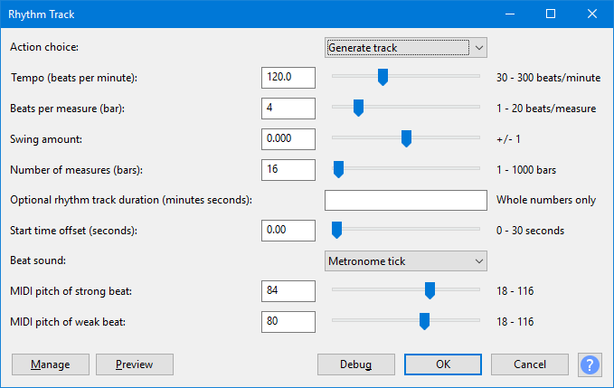

Rhythm Track
- Accessed by:
- 
{kind=link}
Action choice
Choose "Generate Track" unless you want to select either of the two help screens.
Tempo (beats per minute)
The total number of beats (clicks) per minute, default is 120.
Beats per measure (bar)
The first beat of each measure is always louder than the remaining beats in the measure. So for example, three beats per measure will sound like a waltz in 3/4 time signature, and four beats per measure (the default) will sound like the 4/4 of a march or like most pop songs.
Swing amount
When set to zero, each beat has the exact length specified by the Tempo (beats per minute). When set to a non-zero amount, alternate beats are delayed or advanced to give a swing feel. At maximum / minimum settings the rhythm plays with triplet timing.
Number of measures (bars)
Beats per measure is repeated for the chosen number of measures. The default is 16 measures. The combination of tempo, beats per measure and number of measures determines the length of the generated track unless the rhythm track duration is specified (see the next control).
Optional rhythm track duration (minutes seconds)
If you enter a value into this field either [minutes seconds] separated by a space or simply [seconds], the generated rhythm track will be at or slightly longer than this duration. The end of the track is extended into a whole measure if the entered duration does not produce a complete final measure. Use whole numbers only.
Start time offset (seconds)
Makes the rhythm track start at a later point on the Timeline than the very beginning (zero seconds). The maximum of 30 seconds and the default is zero.
Beat sound
Choose which sound to use for the beats. The default is "Metronome tick".
MIDI pitch of strong beat
The pitch of the first beat in each measure. The MIDI values indicate what pitch to use. Examples:
- C-notes are 24, 36, 48, 60 (middle C), 72, 84, 96, 108
- C# (C sharp) above middle C is 61
- The default is 92 (G#).
MIDI pitch of weak beat
The pitch of the remaining beats in each measure. The default is 80 (G# an octave below the strong click).
- Once created, the track can be edited (for example, its volume changed) like any audio track.
- When exporting your finished work, use the Track Control Panel to either close or mute the Rhythm Track, so that it's not audible in the exported file.
Buttons
Clicking on the command buttons give the following results:
- gives a dropdown menu enabling you to manage presets for the tool and to see some detail about the tool. For details see Manage presets.
- plays a short preview of what the audio would sound like if the effect is applied with the current settings, without making actual changes to the audio. The length of preview is determined by your setting in , the default setting is 6 seconds.
- applies the effect to the selected audio with the current effect settings.
- aborts the effect and leaves the audio unchanged.
 brings you to the appropriate page in the Manual, this page.
brings you to the appropriate page in the Manual, this page.